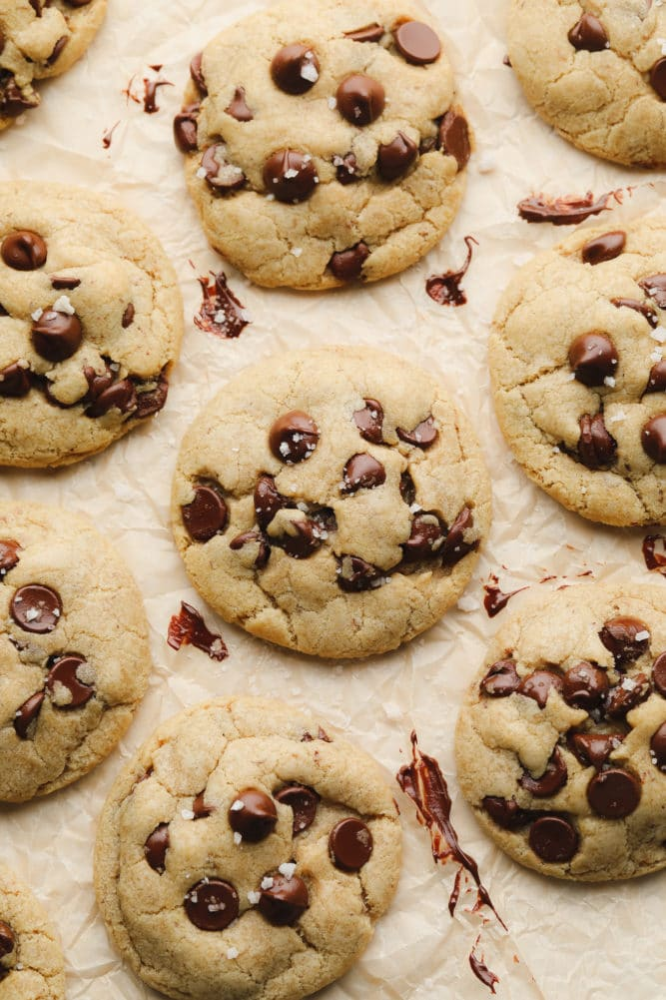

Vegan Chocolate Chip Cookies

This is the best vegan chocolate chip cookies recipe ever! Easy to make in 1 bowl, no chilling required and they turn out perfect every time. Soft, chewy and full of chocolate chips! Recipe from
Nora Cooks Vegan.
Ingredients
- 1 tbsp ground flaxseed
- 2.5 tbsp water
- 1/2 cup vegan butter, softened
- 1 1/4 cup brown sugar
- 2 tsp vanilla extract
- 1 1/2 cup all purpose flour
- 2 tsp cornstarch
- 1 tsp baking soda
- 1/4 tsp salt
- 1 1/4 cup non-dairy chocolate chips
Steps
- Preheat the oven to 350 degrees F and line two cookie sheets with parchment paper or silicone mats.
- Mix the ground flaxseed and water in a small bowl and set aside to make your flax egg.
- In a large bowl using a handheld mixer or a stand mixer with the paddle attachment, beat the softened vegan butter and brown sugar for 1-2 minutes until creamy.
- Add the vanilla and the flax egg and mix to combine.
- Next, stop the mixer and add the flour. Sprinkle the cornstarch, baking soda and salt on top of the flour. Turn the mixer on low speed, and mix until just combined.
- Add in the chocolate chips to incorporate, either by hand or using the mixer.
- Roll the dough into balls, about 1-2 tablespoons each. Place on the prepared pans and bake for 10 minutes (12 minutes for larger cookies), until they are barely golden around the edges. Do not over bake! They will be puffy and lightly colored.
- Let cool on the cookie sheet for 5 minutes, then transfer to a cooling rack. The cookies will firm up as they cool, and become the most perfect chewy cookies ever! Enjoy.